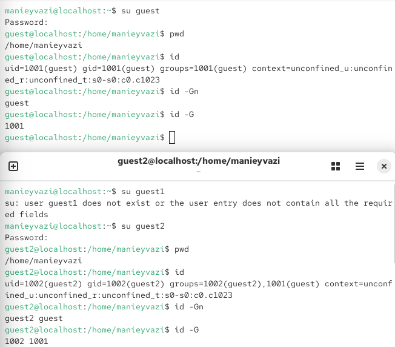
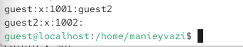
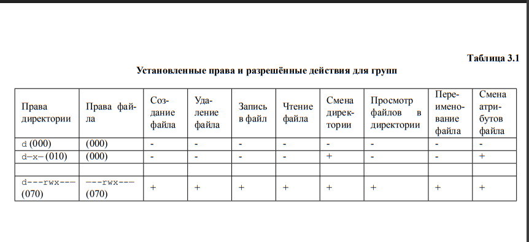
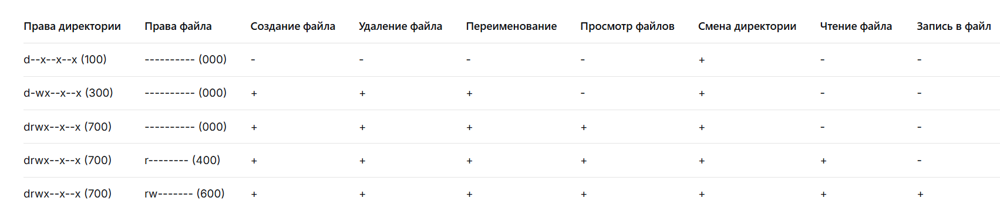

Дискреционное разграничение прав в Linux. Два пользователя
Получение практических навыков работы в консоли с атрибутами файлов для групп пользователей.
От имени администратора (root) создана учётная запись второго
пользователя командой useradd guest2. - Задан пароль для
пользователя guest2 командой passwd guest2. При первом
вводе возникли ошибки: «BAD PASSWORD: No password supplied» и «Sorry,
passwords do not match», после повторного выполнения команды пароль был
успешно установлен (с предупреждением о коротком пароле). - Пользователь
guest2 добавлен в группу guest командой
gpasswd -a guest2 guest.

Рис. 1 — Создание пользователя guest2 и установка пароля
/etc/group командой
cat /etc/group для проверки состава групп.guest:x:1001:guest2.
Рис. 2 — Проверка членства guest2 в группе guest в файле /etc/group
pwd определена текущая
директория — /home/manieyvazi.id для guest получены сведения:
uid=1001(guest), gid=1001(guest), groups=1001(guest).id для guest2 получены сведения:
uid=1002(guest2), gid=1002(guest2),
groups=1002(guest2),1001(guest).id -Gn и id -G подтвердили, что
guest2 входит в группы guest2 и guest.
Рис. 3 — Определение групп пользователей guest и guest2
newgrp guest./home/guest, разрешив все действия для пользователей
группы: chmod g+rwx /home/guest./home/guest/dir1 сняты все атрибуты
командой chmod 000 dir1.
Рис. 4 — Изменение прав директории /home/guest и снятие атрибутов с dir1

Рис. 5 — table2 - Установленные права и разрешённые действия для групп

Рис. 6

Рис. 7
| Операция | Минимальные права на директорию | Минимальные права на файл |
|---|---|---|
| Создание файла | -wx–x–x (300) | (000) |
| Удаление файла | -wx–x–x (300) | (000) |
| Переименование файла | -wx–x–x (300) | (000) |
| Просмотр файлов в директории | rwx–x–x (700) | (000) |
| Смена директории | –x–x–x (100) | (000) |
| Чтение файла | –x–x–x (100) | r——– (400) |
| Запись в файл | –x–x–x (100) | rw——- (600) |

Рис. 8 — Минимально необходимые права для операций внутри dir1
В ходе лабораторной работы были получены практические навыки работы в
консоли с атрибутами файлов для групп пользователей. Была создана
учётная запись второго пользователя guest2, который был добавлен в
группу guest. С помощью команд groups, id -Gn,
id -G и cat /etc/group подтверждено членство
guest2 в группе guest. Опытным путём установлено, что для выполнения
операций внутри директории пользователем из группы необходимы права на
выполнение (x) для смены директории, а для создания и удаления файлов —
также права на запись (w) для группы. Для чтения и записи в файл
необходимы соответствующие права на сам файл. Результаты согласуются с
целью работы.